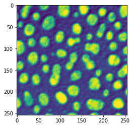
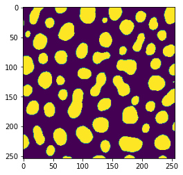

scikit-image for processing images
Contents
scikit-image for processing images¶
Opening images
from skimage.io import imread
image = imread("blobs.tif")
Showing images
import matplotlib.pyplot as plt
plt.imshow(image)
plt.show()

plt.imshow(image, cmap="hot")
plt.show()

plt.imshow(image, cmap="gray")
plt.show()

Filters¶
from skimage import filters
# Gaussian blur
gaussian_blurred_image = filters.gaussian(image, 5)
plt.imshow(gaussian_blurred_image)
plt.show()
# LoG
laplacian_of_gaussian = filters.laplace(gaussian_blurred_image)
plt.imshow(laplacian_of_gaussian)
plt.show()
# another Gaussian blur
gaussian_blurred_image_2 = filters.gaussian(image, 10)
plt.imshow(gaussian_blurred_image_2)
plt.show()
# DoG
difference_of_gaussian = gaussian_blurred_image - gaussian_blurred_image_2
plt.imshow(difference_of_gaussian)
plt.show()


Some images ask for a structuring element “selem”, for example “disc” with a given radius:
from skimage.morphology import disk
median_filtered = filters.median(image, disk(5))
plt.imshow(median_filtered)
plt.show()

The threshold_otsu operation delivers a number - the threshold to be applied
from skimage import filters
threshold = filters.threshold_otsu(blurred_image)
print(threshold)
0.48307635389561887
Using numpy arrays, we can apply the threshold by applying the >= operato
thresholded_image = blurred_image >= threshold
plt.imshow(thresholded_image)
plt.show()

Postprocessing operations, to refine binary masks, can be found in the morphology package
from skimage import morphology
eroded_binary_image = morphology.binary_erosion(thresholded_image)
plt.imshow(eroded_binary_image)
plt.show()

Connected components analysis¶
from skimage import measure
# run connected components analysis
label_image = measure.label(thresholded_image)
plt.imshow(label_image)
plt.show()

Feature extraction¶
To read out properties from regions, we use the regionprops_table function:
from skimage import measure
# analyse objects
table = measure.regionprops_table(label_image)
# show table
table
{'label': array([ 1, 2, 3, 4, 5, 6, 7, 8, 9, 10, 11, 12, 13, 14, 15, 16, 17,
18, 19, 20, 21, 22, 23, 24, 25, 26, 27, 28, 29, 30, 31, 32, 33, 34,
35, 36, 37, 38, 39, 40, 41, 42, 43, 44, 45, 46, 47, 48, 49, 50, 51,
52, 53, 54, 55, 56, 57, 58, 59, 60, 61]),
'bbox-0': array([ 0, 0, 0, 0, 0, 6, 17, 18, 18, 21, 21, 26, 39,
40, 42, 44, 44, 60, 60, 63, 66, 73, 75, 77, 82, 86,
88, 95, 102, 108, 110, 115, 115, 115, 125, 130, 137, 137, 138,
149, 153, 157, 158, 160, 166, 174, 185, 193, 195, 199, 199, 203,
214, 214, 217, 223, 232, 248, 249, 249, 250]),
'bbox-1': array([ 11, 53, 95, 144, 237, 189, 211, 37, 133, 0, 162, 59, 225,
4, 128, 17, 184, 89, 206, 235, 162, 53, 117, 26, 0, 214,
157, 245, 92, 25, 113, 56, 151, 210, 252, 0, 75, 233, 59,
182, 125, 5, 206, 35, 167, 222, 116, 251, 200, 17, 89, 51,
0, 220, 161, 130, 39, 170, 117, 228, 67]),
'bbox-2': array([ 30, 11, 28, 23, 29, 26, 39, 36, 27, 32, 47, 57, 57,
51, 68, 72, 75, 87, 81, 84, 81, 96, 96, 96, 114, 105,
114, 115, 121, 138, 150, 131, 150, 141, 127, 150, 187, 167, 157,
165, 175, 181, 176, 185, 196, 196, 211, 209, 211, 232, 229, 233,
239, 240, 244, 245, 250, 254, 254, 254, 254]),
'bbox-3': array([ 35, 74, 122, 167, 256, 207, 227, 53, 142, 2, 187, 87, 241,
13, 150, 41, 205, 109, 223, 256, 175, 75, 147, 42, 19, 232,
191, 256, 115, 49, 140, 71, 180, 239, 255, 16, 102, 256, 75,
195, 148, 27, 222, 54, 194, 244, 144, 256, 213, 37, 118, 74,
11, 248, 201, 147, 54, 188, 139, 242, 82])}
from skimage import measure
# analyse objects
table = measure.regionprops_table(label_image, properties=('area',
'centroid',
'orientation',
'major_axis_length',
'minor_axis_length'))
# show table
table
{'area': array([422, 182, 661, 437, 476, 277, 259, 219, 67, 19, 486, 630, 221,
78, 449, 516, 390, 419, 267, 353, 151, 400, 426, 246, 503, 278,
681, 176, 358, 544, 597, 181, 629, 596, 5, 263, 899, 476, 233,
164, 394, 411, 235, 375, 654, 376, 579, 64, 161, 457, 625, 535,
205, 562, 845, 280, 211, 78, 86, 51, 46]),
'centroid-0': array([ 13.03080569, 4.25274725, 12.54462935, 9.82608696,
13.48739496, 15.82310469, 27.9034749 , 26.10502283,
21.80597015, 26.21052632, 33.19753086, 41.38412698,
47.04977376, 45. , 54.77060134, 57.73062016,
59.54358974, 73.20286396, 70.61797753, 73.04532578,
72.86754967, 83.8875 , 83.69953052, 86.01626016,
97.43737575, 94.92805755, 99.08957416, 105.17613636,
111.29329609, 122.20772059, 129.75041876, 122.86187845,
132.25596184, 127.43624161, 125.4 , 139.64638783,
162.42157953, 153.10714286, 146.58798283, 156.52439024,
163.16751269, 168.84671533, 166.30638298, 171.912 ,
181.5030581 , 184.70478723, 197.35578584, 200.59375 ,
203.01242236, 215.22538293, 213.8192 , 217.33831776,
225.91707317, 227.2455516 , 229.82485207, 233.22142857,
240.507109 , 251.1025641 , 251.31395349, 251.49019608,
251.89130435]),
'centroid-1': array([ 20.11374408, 63.07692308, 108.38880484, 154.40961098,
246.81722689, 197.29963899, 218.69498069, 44.63013699,
137.13432836, 0.42105263, 173.88683128, 73.15555556,
233.09049774, 7.84615385, 138.42316258, 28.37015504,
194.48974359, 98.8902148 , 214.09737828, 245.39376771,
167.41721854, 63.7675 , 129.73004695, 33.54471545,
7.82306163, 222.51438849, 174.69162996, 250.8125 ,
102.79888268, 37.09375 , 126.54606365, 62.56906077,
164.82352941, 223.81543624, 252.8 , 7.07984791,
89.02892102, 245.55672269, 66.8111588 , 188.13414634,
136.2715736 , 16.13625304, 213.66808511, 44.16 ,
179.41131498, 232.8856383 , 130.22625216, 253.3125 ,
205.9068323 , 26.02844639, 102.7184 , 62.13084112,
3.96585366, 233.97686833, 180.01420118, 137.93571429,
46.03317536, 178.69230769, 127.65116279, 234.37254902,
73.65217391]),
'orientation': array([-0.43590005, -1.51719301, -0.11132311, -0.54108842, -0.03558853,
-0.48028435, -0.083717 , -0.16877677, -0.64126417, 0.01558673,
-0.29705579, -0.55469055, -0.02592738, -0.27297994, 0.08884011,
-0.33781062, -0.40757499, -0.31976801, -0.34995504, -0.89945406,
-0.33273302, 0.14556231, -1.26988213, -0.12694794, 0.02885622,
-0.52509017, 1.33535712, -0.09195847, 1.45621877, -0.17212832,
-0.44981084, 0.19870233, 0.57880306, 1.53130764, -1.24904577,
-0.24358471, -0.22760332, -0.57245073, -0.17146583, -0.42972308,
-0.89565179, -0.46916724, -0.38679085, 0.0708587 , -0.01243077,
-0.74460224, 1.34913385, -0.03433983, -0.32920546, 0.29370543,
0.71719113, 0.23458151, 0.01984324, 1.48374199, 1.44310162,
0.0386161 , -0.2347022 , 1.57044916, -1.56085432, -1.56443851,
1.53559062]),
'major_axis_length': array([34.56678888, 20.8026967 , 30.20843327, 24.60612975, 31.07510564,
20.15136971, 21.76130161, 17.72901691, 9.7617521 , 11.3580574 ,
25.83617991, 33.02088095, 17.96356809, 11.37733141, 26.16578375,
27.90793889, 35.22587951, 27.64929851, 21.52692969, 23.05533006,
15.36615401, 23.76898096, 32.22250761, 19.11147916, 33.32379413,
20.01305549, 36.31007428, 20.51693904, 23.711198 , 29.10074139,
47.45100791, 16.16587984, 40.26849515, 28.93179826, 3.09838668,
20.42131237, 54.50029599, 32.84922326, 18.87938834, 16.6278047 ,
25.91624972, 25.62850227, 18.63071899, 25.02246727, 30.91464637,
23.33806121, 27.88400106, 15.92559386, 16.27492153, 34.69368842,
32.37930683, 29.89822909, 24.8029258 , 27.60752259, 40.97728757,
21.30431372, 18.48913757, 17.57979927, 21.26142657, 13.7420795 ,
15.94871407]),
'minor_axis_length': array([16.48854952, 11.73607397, 28.4095025 , 23.14399594, 19.85288155,
17.52356539, 15.30908018, 15.74545789, 8.73126792, 1.96720062,
24.02896155, 24.46021209, 15.7249894 , 8.70149949, 21.8714852 ,
23.58546762, 14.51604578, 19.32195688, 15.85206736, 19.59158973,
12.55534439, 21.49344422, 18.07342785, 16.39600451, 19.8126124 ,
17.6764316 , 24.75629867, 11.46520272, 19.23919485, 23.88867517,
17.07842949, 14.31939973, 20.71900007, 26.32078912, 1.78885438,
16.4878232 , 21.75390101, 19.19088369, 15.73952457, 12.56394903,
19.39747777, 20.47955086, 16.093272 , 19.10389038, 27.1766156 ,
20.55266608, 26.48486595, 5.35465547, 12.61091853, 16.92625793,
24.62499328, 22.79510501, 11.21076753, 26.0125377 , 26.47885908,
16.7508176 , 14.5227623 , 6.0286381 , 5.42687102, 5.03241351,
3.80398178])}
We can access this table like a dictionary containing arrays, e.g. to derive the mean of the colum “area”:
from skimage import measure
import numpy as np
# analyse objects
table = measure.regionprops_table(label_image, properties=('area',))
# measure mean area
np.mean(table['area'])
358.42622950819674